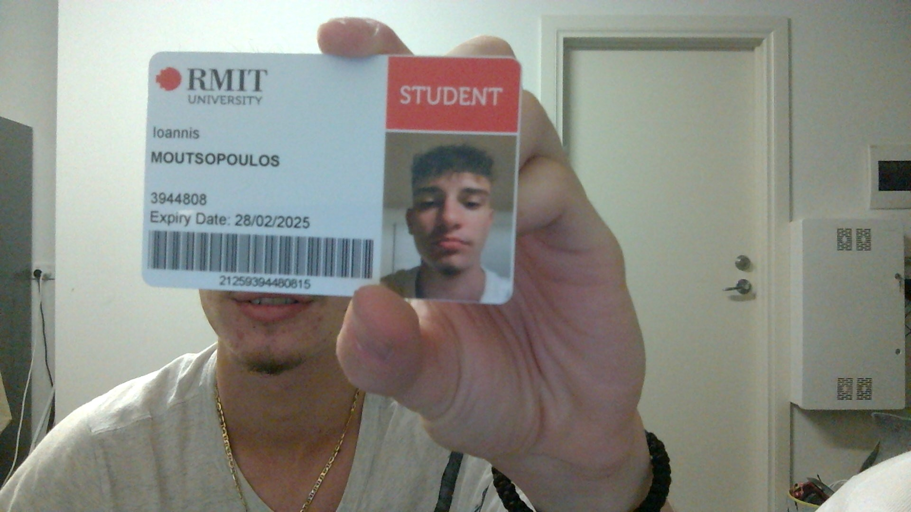

Hello, my name is Ioannis Moutsopoulos, but people tend to call me Yiannis as it is easier to say. My student number and email are s3944808@student.rmit.edu.au and I am enrolled in Bachelor of Information Technology. I am 18 years old, and I moved here in Australia in 2016. I was born and raised in Greece. My mum was born in Australia, so we made this choice to move countries. I speak Greek fluently and my favourite food is obviously souvlaki… I play domestic and representative basketball. I love listening to music and hanging out with my friends in my spare time. I have a puppy named Rosie. She is a Maltese- shitzu.
My interest in IT started in Greece in my digital technology class. I believe I was in year 5 when I first started learning about computers. We obviously started learning about the basics but as time went on, my love for IT was increasing. Then, when I came to Australia, in year 9 I selected digital technology as one of my electives. We started coding in python and making little games like flappy bird. That’s when I decided that I wanted a career with IT in my future as I was interested in it a lot.
I chose to come to RMIT as I heard many of my peers saying that RMIT was the best uni in Melbourne if you want to study technology. Some of my friends also attend RMIT and it’s a good experience catching the train with them and hanging out in the city after classes.
In my studies, I expect to learn how to code properly and learn more about the software of a computer. As I said above, I want to follow a career in IT and specifically Cyber Security. I trust that RMIT can help me achieve my goals of being successful.
 link to the job application
link to the job application
A position that interests me is a cyber security analyst, particularly within the company Interactive. Interactive is a company that offers many different IT services. One of them being focal on cyber security. As mentioned above, I want to follow a career in Cyber Security, and that is why this job interested me. More specifically, in this role, you will be needed to defend customers from cyber-attacks which I find suited to what I’m after in a job.
To pursue this role some of the requirements are to have obtained 2 years’ experience working within a cyber security role prior to applying, are available to work night shifts, have a strong will to learn new cyber security tools and get involved and partake in new projects. As well as understanding infrastructure level tech, of offensive security tools, and of adversarial and malware behaviour.
My personal experience and qualifications that I currently have are a certificate 3 in networking, and am beginning a bachelor’s degree in Information Technology, as well as having a strong desire to learn, develop more experience and knowledge into cyber security, and develop my skills further.
In order to obtain the skills, qualification and experience required for the position, I aim to successfully complete my course and gain the degree to then use it to apply for a job in which I will further develop my skills and expertise, as well as pursuing a master’s in cyber security which I will then acquire the skills and qualifications, including understanding all the skills required, needed to apply to this position at Interactive.
On the 16 personalities test I achieved a consul personality. In summary a consul personality is a person with an extroverted, observant, feeling and sometimes judging trait. In most cases they are attentive, and people focused, I find that these do reflect some of my own personality traits as I do tend to gravitate to be the more social person in most settings and I tend to find myself watching what goes on around me. In terms of my results in the learning style test, it shows that I am an auditory learner. Therefore, meaning that I learn by hearing and listening, and understand and remember things when I have been told them. This again is my preferred style of learning, so the result of the test is accurate in terms of my situation. In the big 5 personality test my highest score was under agreeableness, which is the tendency to put others needs ahead of my own, and to rather cooperate than compete. In most cases I find myself opting to work with others than to go head on and disagree completely, I usually am quite easy with other people’s opinions and try to work in others favours.
Considering all these tests which I find reflect my traits quite accurately, I think they are both suitable and can be disadvantageous in team settings. Being extroverted and more social would be beneficial as that is needed in teamwork in order to communicate, as well as my auditory learning style, communication is key in teams so having that would prove helpful. Although being open to putting others before myself and my own work can be good, it can also prove to be more detrimental in some cases. This can influence my behaviour in a team to sometimes not put my own opinions forward and offer changes to avoid any disagreements. I believe this is something that I should work on in order to ensure I am being most efficient in group settings and in general for my own benefit.
When forming a team these traits show that I can work well in a team if I put myself forward but also hear others out and make sure to understand what is going on. In a team I should ensure to communicate as that is key to make certain everything works and make sure everyone is included.
Fingerprint based ATM is a project involving the use of fingerprints as a new form of authentication within ATM’s. This would be a more efficient and safer process of using ATMs as each person has a unique fingerprint; therefore, ensuring a safer way to access your bank. The use of cards would be an outdated form, with users not required to carry it around, thus parting with the worries of losing or having your card stolen. The user would also be required to enter a pin to proceed with transactions to ensure two-factor authentication and install a greater security.
ATMs do not require the holder of the card to be present. If a card is stolen and the pin number is ascertained, an authorised person can easily access the account. Fingerprints provide a more secure way of accessing your account as your fingerprint is different to everyone else’s. occasionally, ATMs will malfunction and “eat your card”. The customer would then need to contact their bank to get this repaired. Although, if this occurs at night or on a weekend, the user will have to wait several days before they can use their card again. If the card is kept by another bank’s ATM, there is no guarantee that the user will be able to collect their card. Furthermore, criminals can fit skimming devices and small cameras to ATMs. From that, they can detect your pin and identity and can easily steal the card and potentially all your money. ATM skimming costs the U.S banking system around $1 billion a year, or $350,000 a day, according to the Secret Service. With the use of fingerprints, there will be no possibility of a criminal accessing your account, unless they literally cut your finger off, which is very unlikely to happen.
The aim of this project is to innovate a better security system by using fingerprint-based scanning in the ATM system. This is done using biometrics. Biometrics will automatically compare the users fingerprints to a matching one that has been previously created and stored to validate their identity. This process is popular as it is effortless and can provide a higher level of security, with the process being simple and faster. In order to identify fingerprints, the device must capture the fingerprint and the go through an algorithm to find the match. In general and current use, the thumb is used to gain access through scans but users can select any finger they wish. This system will successfully get rid of many limitations. Fingerprints are collected in EC2 database and each user’s fingerprint is stored as a ‘string’ which means every string is unique to its owner. These strings are then stored into the cloud for memory. When a user wants to access their account, the process is simple and down to placing their finger on the scan tech of the machine and the unique string will be searched through cloud and when the match is validated the authentication will take place. If the fingerprint is not discovered, the machine will not permit any access into the account through any other means. Thus, voiding many fraud issues. This will reduce the need for clients to visit solely their banks ATM and allow the usage of other banks as the tech will be available and recognised across ATMs. To ensure optimal usage a user should register 2-4 fingers to provide more protection. If the situation arises that the finger initially used cannot be used (i.e. the thumb has been worn out or burnt off from a user’s profession. Thus, it would be more beneficial to register multiple fingers in the event of the generally used finger unable to scan. This new ATM system would work following the process that a user is to select their bank, scanning their finger and then entering their pin. The machine will then follow the normal process of current ATM’s and move to a transaction screen to complete the action.
The most effective scanner for this system would be a capacitive scanner, which measures your finger electrically. The scanner builds up a picture of the fingerprint by measuring the distances between the finger’s ridges and hollows. These types of scanners are similar to the ones Apple used on their iPhones, iPads. They work faster than any other scanners, but they don’t work well in moisture. That is why it is recommended to have more than 1 fingerprint registered.
Capacitive scanners are the main software that this system will use. The scanner uses a light- sensitive microchip to produce a digital image. The computer then analyses the image, selecting just the fingerprint and uses sophisticated pattern- matching software to turn it into a code. They offer better security as they are hard to spoof. They do not capture fingerprints optically, so they cannot be fooled with fingerprint images.
If this project is successful, then many limitations will be withdrawn. Fingerprint based ATM system is more secure than just the card. Users can make transactions using their fingerprint anywhere and at any time without the need of a card. The user also would not feel uncomfortable of theft and scam at a more unpopulated ATM at night with no security guards or anyone occupying. The customers won’t have to worry about the ATM “swallowing” their card and them having to contact the bank to get it back. It is much quicker and simpler to use as you only have to put your finger on a scanner, instead of having to find your card in your wallet and then insert it in the machine. In summary, I believe that a fingerprint ATM based lock would be beneficial to eliminate theft, increase the security and make the process easier and faster for everyone